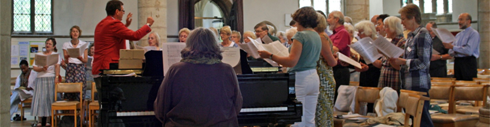

We are a mixed voice choir of some 70 voices.
Dates: We plan to meet for rehearsals every Monday evening during term time.
Times: 7.45pm to 9.30pm
Venue: The Arthur Marshall Room, The Great Hall, Oundle School, Milton Road, Oundle
There are no auditions and all are made welcome, no matter what skill level you have. If you are interested in joining our society please contact Pieter Bolman or Bryan Cresswell directly for more information by using our easy to use eForm or telephoning/emailing using the details below. May we also mention our grateful thanks to Oundle Town Council for its continued financial support.
.jpg)

Tickets: £8.00 for Adults, (children free) from Oundle Festival Box Office.
Tickets are available now and also from ODCS members, or in the door.


Chairman : Pieter Bolman
Treasurers: Kath Tonks and John Davies
Secretary: Janet Ollerenshaw
Legal: John Davies
Website: Bryan Cresswell
Accompanist: Elizabeth Arkell
Autumn 2019 - Britten - St Nicolas, Chilcott - Time of Snow Mid Winter, Whitacre - Lux Aurumque, Rutter - Nativity, Candlelight & Shepherds Pipe Carols.
Spring 2019 - Vivaldi GLORIA & Tippett 'Five Negro Spirituals
Autumn 2018 - G.F. Handel - Messiah Part 1
Spring 2018 - Gioacchino Rossini’s - Petite Messe Solennelle
Autumn 2017 - Benjamin Britten's - A Ceremony of Carols
Spring 2017 - Handel’s Israel in Egypt - A joint concert with Uppingham Choral Society and the Bardi Orchestra on Saturday 8th April 2017 in Uppingham
Spring 2016 - Creation by F. J. Haydn
Spring 2015 - Mass in C Minor K.427 by Mozart
Spring 2014 - Now is the Month of Maying - A Concert for May Day!
Autumn 2013 - The Nelson Mass by F. J. Haydn
Spring 2013 - Messe Solennelle by Louis Vierne (Oundle School Chapel)
Autumn 2012 - Messiah by G F Handel
Spring 2012 - The Music Makers by Edward Elgar (Peterborough Cathedral with Oundle School)
Autumn 2011 - Messa di Gloria by Giacomo Puccini
Spring 2011- Requiem by W. A. Mozart